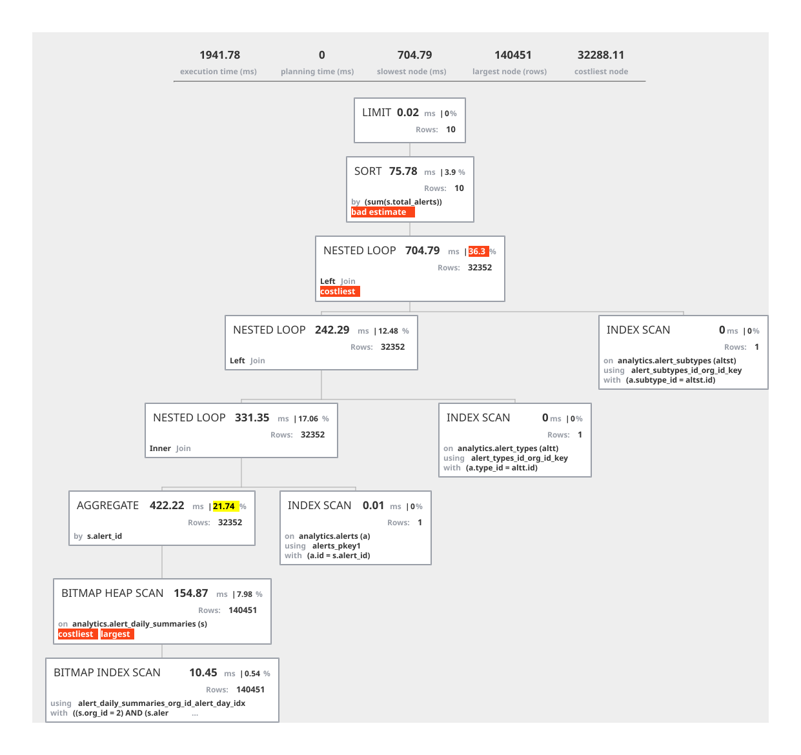

Postgres Explain Visualisierung als Plugin

Updates
Durch meine Beschäftigung mit Postgres als Testhäschen für die Unterstützung neuer Datentypen in der sQLshell musste ich mich natürlich auch mehr und tiefgreifender mit Postgres selbst auseinandersetzen.
Das führte mich unter anderem zu diversen Online-Tools zur Analyse von Resultaten des EXPLAIN-Statements wie etwa hier oder hier.
Speziell die erste Lösung gefiel mir und ich wollte sie in der sQLshell integriert verfügbar machen. Meine erste Idee dafür war, die Online-Anwendung in meinen Docker-Zoo einzubinden und dann ein Plugin anzubieten, das darauf zurückgreift. Dabei stellte sich aber schnell heraus, dass das (mir?) nicht möglich war: Das Projekt selbst hat seit 7 Jahren kein Update mehr erfahren und ließ sich wegen unzähliger npm-Fehler im Erstellungsprozess nicht als Docker-Image erstellen.
Nach einem kurzen Versuch, die Online-Version einzubinden entschied ich mich, die Lösung nachzuimplementieren. Es entstand eine reine Java-Implementierung, die (beinahe) feature-complete zur Online-Version von vor 7 Jahren ist.

Visualisierung eines Ausführungsgraphen als Resultat einer EXPLAIN-Anweisung in PostgreSQLEs ist möglich, die Visualisierung in den Formaten SVG, PDF und PNG zu exportieren. Die Knoten selbst zeigen die wichtigsten Informationen direkt an - darüber hinaus werden - wie im Vorbild - die Knoten markiert, die das Maximum an Kosten, Zeit und Zeilen aufweisen. Zusätzlich werden Knoten markiert, bei denen geschätzte und tatsächliche Zeilenanzahl drastisch voneinander abweichen. Die Visualisierung selbst ist interaktiv: Bei Klick auf einen der Knoten wird eine Tabelle mit allen Eigenschaften dieses Knoten angezeigt.
Die Implementierung kann auch als Teil eines Service benutzt werden: Sie funktioniert headless und man könnte einen entsprechenden Dienst daraus erstellen, der eingesandte EXPLAIN-Ergebnisse in eine Graphik gewünschten Formats wandelt und diese zurückliefert.
Aktualisierung vom 18. November 2023
Artikel, die hierher verlinken
Postgres Explain Visualisierung Plugin - Update
18.11.2023
Ich habe bereits über das Plugin zur Visualisierung der Ergebnisse des Postgres Explain Statement berichtet - jetzt gibt es ein Update mit neuer Funktionalität.


Vor 5 Jahren hier im Blog
-
Terry Miles
25.01.2019
Der Typ (the Dude on the public piano) macht mir jedenfalls immer gute Laune...
Weiterlesen...
Tags
Android Basteln C und C++ Chaos Datenbanken Docker dWb+ ESP Wifi Garten Geo Git(lab|hub) Go GUI Gui Hardware Java Jupyter Komponenten Links Linux Markdown Markup Music Numerik PKI-X.509-CA Python QBrowser Rants Raspi Revisited Security Software-Test sQLshell TeleGrafana Verschiedenes Video Virtualisierung Windows Upcoming...
Neueste Artikel
- Migration weg von Repsy
Ich habe Repsy verlassen.
Weiterlesen... - Validierung elektronischer Zertifikate
Neulich wurde ich auf eine Frage aufmerksam, die ich - sensibilisiert durch die hohe Anzahl von Vorträgen zum Thema "Validierung von Zertifikaten" auf der letzten DefCon - selber und näher untersuchen wollte: Werden elektronische Zertifikate programmiersprachen- und frameworkübergreifend identisch validiert oder existieren hier Unterschiede?
Weiterlesen... - LinkCollections 2023 IX
Nach der letzten losen Zusammenstellung (für mich) interessanter Links aus den Tiefen des Internet für dieses Jahr folgt hier nunmehr die nächste:
Weiterlesen...
Manche nennen es Blog, manche Web-Seite - ich schreibe hier hin und wieder über meine Erlebnisse, Rückschläge und Erleuchtungen bei meinen Hobbies.
Wer daran teilhaben und eventuell sogar davon profitieren möchte, muß damit leben, daß ich hin und wieder kleine Ausflüge in Bereiche mache, die nichts mit IT, Administration oder Softwareentwicklung zu tun haben.
Ich wünsche allen Lesern viel Spaß und hin und wieder einen kleinen AHA!-Effekt...
PS: Meine öffentlichen GitHub-Repositories findet man hier - meine öffentlichen GitLab-Repositories finden sich dagegen hier.